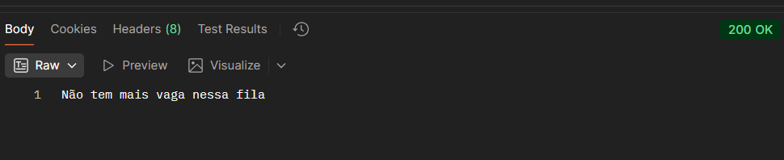

Atributos:
idQueue: Número do tipo Long correspondente ao ID da fila que será inserido o paciente.
patientSusNumber: String com 15 caracteres correspondente ao Número do Sus do Paciente cadastrado.
Retornará 201 em caso que o paciente consiga entrar na fila.
RETORNA A POSIÇÃO DO PACIENTE NA FILA, CONTUDO, A POSIÇÃO MUDA DINAMICAMENTE EM CASO DE ALGUMA PRIORIDADE ENTRAR NA FILA E OCUPAR UMA POSIÇÃO A FRENTE DO PACIENTE. É INTERESSANTE COLOCAR UMA CHAMADA DE CONSULTA DA POSIÇÃO DO PACIENTE SEMPRE QUE ELE ABRIR A TELA.

Caso não tenha mais vaga na fila, retornará 200.
